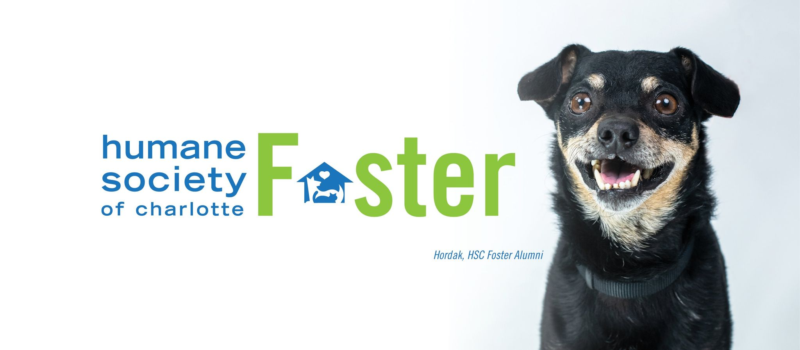

Welcome Humane Society of Charlotte Fosters! This portal is designed to make fostering animals at the HSC a seemless process. We have a list of all the animals available to foster with important details regarding the special care needed to ensure the safety of animal as well as yourself. If you see an animal that is a good fit for you to foster you can send an email to one of the foster coordinators through the Contact Us page. You can gain exposure for your foster to increase visibilty and promote adoptions by joining one of our upcoming events. Thank you for all that you do! Be sure to follow us on social media and tag us in your pictures with your fosters.
